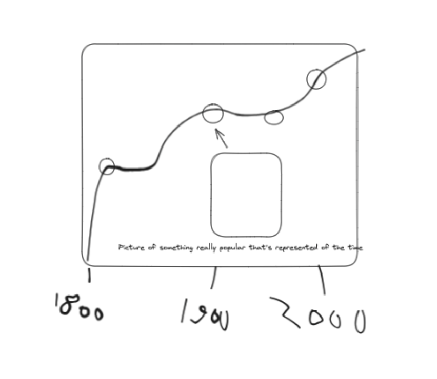
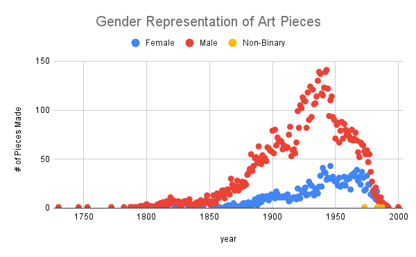
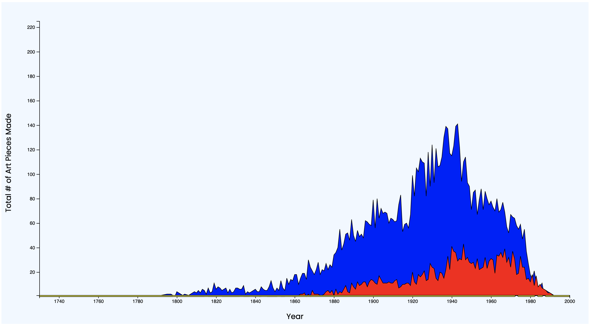

Prospectus + Ideation Session Notes
For my final project, I’m visualizing the total number of artwork created by men, women, and non-binary folk to show the gender artist gap throughout the least couple of hundred years. By doing this, I hope to demonstrate how male-dominated the art world has been throughout history. The way I've done this is by creating a line graph with the x-axis tracking time, the y-axis tracking the number of art projects created, and three separate lines that track the number of pieces created by males, females, and non-binary people.
My intended audience is students and scholars of women and gender studies, as well as anyone involved with funding art education programs to advocate for creating pathways for women to become professional artists.
During the ideation session, I thought of creating this and made the following drawing:
During this session, I had only planned to show how female artists were represented before I expanded to including males and non-binary folk as a comparative measure.
Sketches and Drafts
Once I had my idea, I loaded all of the data into Microsoft Excel and created a Pivot Table and Filter to help me clean up the data. I removed all data entries that contained either an null value for Gender or year. I also removed all data entries for year that had a value of 0. Finally, I removed a column of data that began in 1181 as it skewed the data.
To illustrate my final product, I created the following graphic that I plan to code into my program using Google Sheets.
By using this tool, I hope to get a good idea of what the graph should look like by the time I had finished with it.
With everything in mind, I coded the first official rough draft of my graph for our prototyping session.
During my session, I received the following pieces of advice:
- Stack each of the areas on top of each other so that the top of the "Males" section would be able to show the maximum number of art pieces made in a year in total.
- More clearly illustrate the maximum number of each area
- Fix the bottom of the graph so that the lines wouldn't go below the x-axis
Final Version
With these notes, I set out to finish the final version of my project, shown below!
By the end of my process, I was able to incorporate all of the notes that I received during the critique session. Additionally, I created some interactivity with my graph! If you hover over each area, text will display to indicate the maximum number of pieces created by a gender identity and what year that happened.
I also decided to add a legend on the top level corner of the graph to help clearly show which area belonged to each gender group. I also decreased the maximum number on the y-axis so that there wasn't so much empty space at the top of the graph.
Concluding Notes
From someone who had no experience with D3.js, I'm fairly proud of the work that I did with this project! My biggest challenge was incorporating interactivity, as I had trouble with the mouseover functions. I spent most of my time cleaning up the data and making decisions on what to include or leave out. If I had more time, I would want to get the text to disappear after I finish hovering over each of the areas.
Thank you Ellie for an amazing class, and I hope to be your student again in the future. I wish you a wonderful end of the year!
Warmly,
Leonard